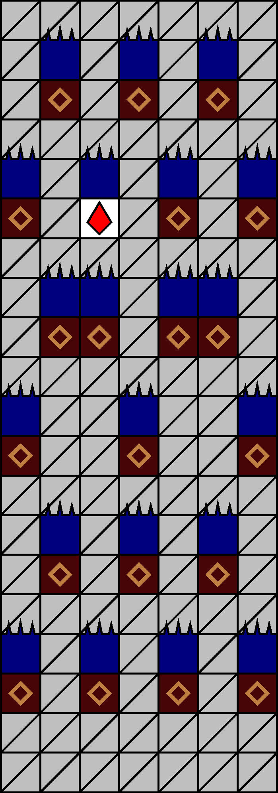
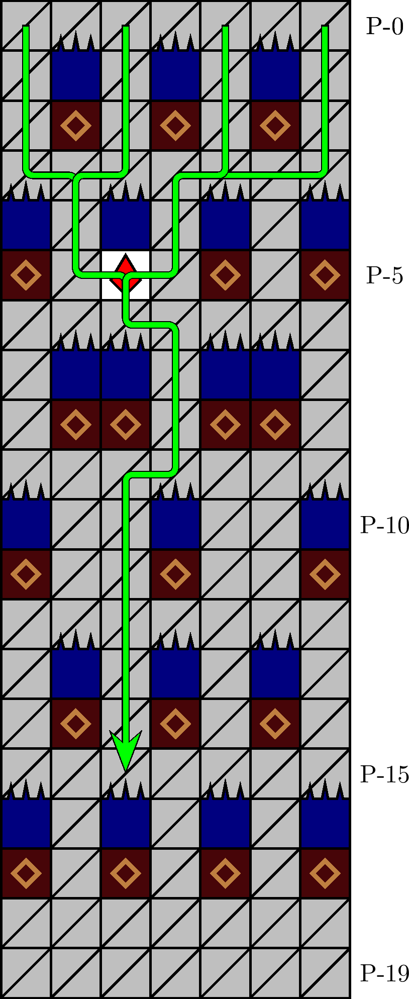

一般指針
エリア・針ネット


指針
針ネットは， P-3 行目で 0 列以左に移動してからザクロを取得し，その直下 P-(6, −1) を経由して潜行を続けます．前期では座標 P-(19, −2) を目指し，直下掘りを基本として潜行します．
解説
針ネットとは，図 3.2.5.1 のエリアを指します． 200 m型の 82 行目に確率で出現します． P-1 行目の針の配列によって同定されます．図 3.2.5.2 の経路が定型です．
注意: 0 列以右からエリアに進入してザクロを取得する場合，ザクロ直下の座標 P-(6, −1) の経由は省略できません．横断ではなく接触のみによりザクロを取得して座標 P-(6, 0) を直接目指すと，座標 P-(2, 0) の塊の落下に犬の降下が間に合わず，圧迫死する危険があります．僅かに迂遠ですが，必ず座標 P-(6, −1) を経由します．
P-17 行目までに出現する針と塊は，図 3.2.5.1. のもので全部です．
P-19 行目は， 200 m型の 100 行目にあたります．前期において，これに続く 300 m型は −2 列の直下掘りを指針としているので（「300 m型前期指針」を参照），座標 P-(19, −2) でステージを遷移することが理想的です．後期においては，特に制約はありません．